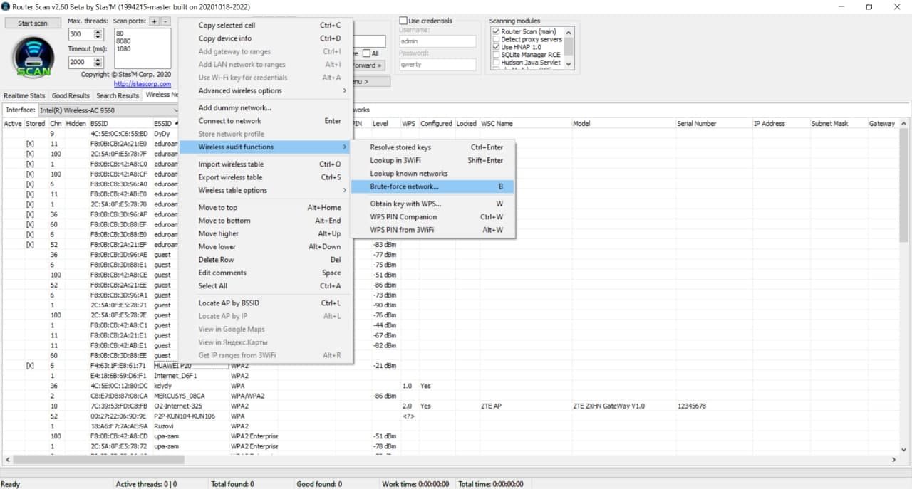
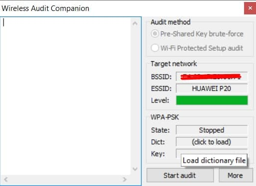

Co je WEP?
První bezpečnostní protokol byl nazván Wired Equivalent Privacy nebo WEP. Tento protokol byl bezpečnostním standardem od roku 1999 do roku 2003. Ačkoli tato verze protokolu byla vytvořena pro ochranu, přesto měla poměrně průměrnou úroveň zabezpečení a byla obtížně nastavitelná. V té době byl dovoz kryptografických technologií omezen, což znamenalo, že mnoho výrobců mohlo používat pouze 64bitové šifrování. Jedná se o velmi nízké bitové šifrování ve srovnání s 128bitovými nebo 256bitovými možnostmi, které jsou dnes k dispozici. Nakonec protokol WEP nezačal dále rozvíjet.
Co je WPA?
Pro zlepšení funkcí protokolu WEP byl v roce 2003 vytvořen protokol Wi-Fi Protected Access (chráněný přístup Wi-Fi). Tento vylepšený protokol měl stále relativně nízkou bezpečnost, ale bylo snadnější jej nastavit.
Technologie WPA se skládá z následujících komponent:
- IEEE 802.1x — univerzální protokol pro ověřování, autorizaci a účetnictví.
- EAP (Extensible Authentication Protocol) — rozšiřitelný protokol pro autentifikaci.
- TKIP (Temporal Key Integrity Protocol) — protokol integrity klíčů v čase, který používá šifrovací algoritmus RS4.
- MIC (Message Integrity Code) — kryptografická kontrola integrity paketů.
Co je WPA2?
Technologie WPA byla dočasným opatřením před uvedením standardu 802.11 i do provozu. Dalším vývojem tohoto protokolu je WPA2. WPA2 je definován standardem IEEE 802.11, který byl přijat v červnu 2004. V něm jsou implementovány CCMP (Counter Mode with Cipher Block Chaining Message Authentication Code Protocol) a šifrování AES (Advanced Encryption Standard), díky které WPA2 stal bezpečněji než jeho předchůdce. CCMP je šifrovací protokol 802.11 i vytvořený jako náhrada za TKIP, povinný šifrovací protokol WPA a WEP, jako spolehlivější možnost. Jako šifrovací algoritmus se tam používá pokročilý šifrovací standard AES. Pro správu a distribuci klíčů se stále používá protokol 802.1x.
Co je WPA3?
V roce 2018 Wi-Fi Alliance představila WPA3. WPA3 nabízí pokročilé možnosti šifrování vysoce citlivých dat, bezpečnost přenosu zajišťuje za pomoci nejnovějších bezpečnostních metod a zároveň neumožňuje používání zastaralých protokolů. Ke svému fungování naopak vyžaduje používání chráněných rámců správy (Protected Management Frames). Je dokonce možné je nahrát na starší zařízení, pokud na ně výrobce myslí při sestavování bezpečnostních záplat. Musí jej však podporovat i zařízení účastníka sítě, což by ale neměl být tak zásadní problém. WPA3 bez problémů spolupracuje se zařízeními, kompatibilními s protokolem WPA2. V současné chvíli je zavedení tohoto protokolu u zařízení volitelné, postupem času se stane povinným.
WPA-PSK vs. WPA-Enterprise
WPA-PSK — tato možnost je vhodná pro domácí použití. Pro autorizaci v síti potřebujete pouze bezpečnostní klíč. Používá se jedno heslo pro všechna zařízení. Samotné heslo je uloženo na zařízeních. Kde je v případě potřeby vidět nebo změnit. Při použití WPA-PSK je v nastavení přístupového bodu a profilů bezdrátového připojení klientů uvedeno sdílené heslo (Pre-Shared Key) o délce 8 až 63 znaků.
WPA3-Personal přináší lepší ochranu jednotlivým uživatelům tím, že poskytuje robustnější autentizaci založenou na heslech, i když uživatelé volí hesla, která nedosahují typických doporučení složitosti. Tato schopnost je povolena simultánní autentizací Equals (SAE), která nahrazuje Pre-Shared Key (PSK) ve WPA/WPA2-PSK. Tato technologie je odolná vůči útokům offline slovníku, kdy se protivník pokouší určit síťové heslo vyzkoušením možných hesel bez další interakce se sítí.
WPA-Enterprise (WPA-802.1x, RADIUS) — tento režim poskytuje zabezpečení potřebné pro bezdrátové sítě v podnikových prostředích. Nastavení je složitější a nabízí individualizovanou i centralizovanou kontrolu nad přístupem k síti Wi-Fi. Když se uživatelé pokusí připojit k síti, musí předložit své přihlašovací údaje. WPA-Enterprise by měla být použita pouze v případě, že je připojen server RADIUS (Remote Authentication Dial In User Service) pro ověření klienta. Uživatelé se nikdy nezabývají skutečnými šifrovacími klíči. Jsou bezpečně vytvořeny a přiřazeny na relaci uživatele na pozadí poté, co uživatel předloží své přihlašovací údaje. To zabraňuje lidem získat síťový klíč z počítačů.
WPA3-Enterprise také nabízí volitelný režim pomocí 192bitových bezpečnostních protokolů jako minimální pevnost a kryptografické nástroje pro lepší ochranu citlivých dat.
Slovníky
Generovaní slovníku pomocí programu aspell
Pokud slovník aspell není k dispozici, můžete si jej stáhnout ze seznamu nebo použit příkaz dole.
# sudo apt install aspell-zkratka_jazyka
Pro generovaní slovníku skládajícího se ze slov pomocí aspell použijme příkaz:
# aspell -d zkratka_jazyka dump master | aspell -l zkratka_jazyka expand > název_výstupního_souboru
Jestliže chcete mít slovník bez diakritiky vám pomůže tento řádek:
# cat název_vstupního_souboru | iconv -f utf8 -t ascii//TRANSLIT > název_výstupního_souboru
Generovaní slovníku pomocí programu crunch
Tento řádek slouží k vypisování seznamu všech možností kombinací komand v programu crunch.
# man crunch
Základní syntaxe pro crunch vypadá takto:
# crunch minimální_počet_symbolů maximální_počet_symbolů symboly -t pattern -o název_výstupního_souboru
Nyní se podíváme na to, co je obsaženo v syntaxi výše:
- minimální_počet_symbolů — minimální délka hesla,
- maximální_počet_symbolů — maximální délka hesla,
- symboly — znaková sada, která bude použita při generování hesel,
- -t pattern — zadaný vzor generovaných hesel,
- -o název_výstupního_souboru — soubor do kterého chcete vypsat svůj seznam slov.
Příklad využití:
# crunch 4 4 abc + 123 -t @@%% -o pwd.txt
Příkaz bude generovat řetězce o délce 4 symbolů, prvních 2 symbolů budou od „aa“ do „cc“ a ostatní 2 znaků od „11“ do „33“. Výsledek bude uložen do souboru „pwd.txt“.
Generovaní slovníku pomocí skriptu z repositáře GitHubu Passwords
Zpočátku není známo ani kolik znaků tvoří zvolené heslo oběti. Právě z tohoto důvodu útočníci velmi zřídka používají veřejné slovníky. Zde je již třeba využít dovednosti sociálního inženýrství. Přesněji řečeno, stačí k často používaným možnostem přidat informaci o oběti: jméno, příjmení, datum narození atd. To pomůže mnohokrát zvýšit šanci na úspěšný útok. Níže budou uvedeny příkazy pro implementaci této metody.
Stáhněte všechny kódy z Githubu.
# git clone https://github.com/Bitwise-01/Passwords.git
Přejděte do složky staženého projektu.
# cd Passwords
Spusťte požadovaný skript.
# python3 passgen.py
Program nám nabídne zadát klíčová slova pro přidání do generátoru. Zadejte něco a stiskněte Enter. Pro ukončení napište generate.
# generate
Podívejte se na výsledky.
# cat pass.txt
Možnosti prolomení
Útok pomocí metody Brute-force
Jakmile jste vytvořili slovník je třeba najít jemu použití. Pro tyto účely je vhodné nainstalovat program Router Scan. Tento nastroj může nabídnout vám skenování rozsahu IP adres, hledání na kartě podle BSSIDu, připojení k nastavení směrovače atd. Další důležitou výhodou je snadné učení ovladání a k tomu nepotřebujete mít žadné instrukce. Ale nas zajímá prolomení hesla hrubou silou. Nevyhodou bude pomala rychlost a proto byste potřebovali vědět základní udaje o oběti pro generování úzké zaměřeného slovníka.
Obr. 1 — Jak najit metodu útoku hrubou silou v programu Router Scan
Obr. 2 — Kam načíst slovník
Útok pomocí metody KRACK
Útok se nazývá KRACK, což je zkratka pro Key Reinstallation Attacks. Manipuluje s úvodním čtyřcestným handshakem, který je použit pro výměnu šifrovacího klíče používaného během další komunikace. KRACK zneužívá chyby ve třetím kroku, kdy je možné klíč poslat několikrát. Pokud je to uděláno správným způsobem, může být úvodní nonce použit tak, že to kompletně boří bezpečnost šifrování. Nejčastěji se pro tuto metodu používá program Aircrack-ng, ale pro využití síťová karta vašeho počítače musí podporovat režim sledování. Podrobný návod jak prolomit WPA pomocí linuxové verze naleznete na oficiálních stránkách.
Doporučuji se také seznámit s níže uvedenými články:
- Odposlouchávání a prolamování Wi-Fi sítí zabezpečených pomocí WPA2.
- Šifrování WPA2 prolomeno, Wi-Fi sítě je možné odposlouchávat.
- Aircrack-ng: slovníkový útok na WPA-PSK.
Útok pomocí nastavení stejného SSID na falešném AP
Při nastavení bezdrátového adaptéru pro automatické připojení k známým bezdrátovým sítím hrozí, že se uživatel stane obětí útoku Man-in-the-Middle. Útočník může vytvořit AP s identickým SSID. V důsledku toho se klientská zařízení se automaticky napojí k takový AP a bude pracovat přes něj, a útočník bude mít možnost zachytit veškerá návštěvnost své oběti, a to buď útoku na zařízení, která s ním v jednom segmentu sítě.
Například 28. května 2015 hackeři prolomili bezplatné Wi-Fi sítě moskevského metra. Výsledkem je, že tisíce cestujících viděly porno na obrazovkách svých telefonů a tabletů namísto úvodní stránky a výzvy k přihlášení do sítě.
Krádež hesla pomoci sociálního inženýrství
Definovat jednoznačně termín sociálním inženýrství je poměrně složité. Obecně se dá říct, že jde o způsobu získávání užitečných informací od různých lidí, kdy tito lidé netuší, že se stávají cílem útoku. Jsou pak ochotni vyzradit například své osobní údaje, přístupová hesla čí jiné informace, které mohou útočníkovi pomoc získat neautorizovaný přístup do zabezpečeného systému, případně využít tyto informace k podvodu či odcizení něčí identity.
Hlavní myšlenka sociálního inženýrství je tedy následující: proč se obtěžovat s používáním technických prostředků a různých nástrojů k prolamování hesel, když je nejjednodušší někoho přimět k tomu, aby toto heslo řekl sám? Ne nadarmo se říká, že nejslabším článkem každého bezpečnostního systému je člověk. A právě sociální inženýrství této skutečnosti využívá.
Certifikát
Certifikát slouží k ověření identity. Dá se používat i pro identifikaci osob, ale my se s ním budeme setkávat zejména jako s prostředkem pro ověření autenticity serveru, ke kterému se připojujeme. V SSL certifikát je vždy podepsán. Buď může být podepsán sám sebou (tzv. Self-signed Certificate), nebo je podepsán jiným certifikátem, tzv. certifikační autoritou (Certificate Authority).
Bezpečnostní zásady
Chcete-li chránit firemní bezdrátovou síť je nutné:
- Skrýt a změnit SSID používanou ve výchozím nastavení na jakoukoli nejasnou hodnotu.
- Omezit sílu signálu bezdrátových zařízení.
- Nepoužívat WEP a nasadit šifrování WPA.
- Zabraňit klientským pracovním stanicím se připojovat k dostupným bezdrátovým sítím.
- Změnit standardní heslo na směrovači.
- Nepoužívat veřejné otevřené sítě.
Závěr
Zabezpečení bezdrátové sítě se v průběhu času měnilo, aby se stát spolehlivějším, ale současně i jednodušší z hlediska jeho nastavení. Ale bez ohledu na to, jak se zlepšovali protokoly, nejdůležitější zranitelnost bude vždy zůstávat člověk. Nikdo není pojištěn vůči krádeži hesla pomocí sociálního inženýrství, ale pokud budete dodržovat výše uvedené zásady bezpečnosti, pak to pomůže zachovat vaši síť před hackingem.